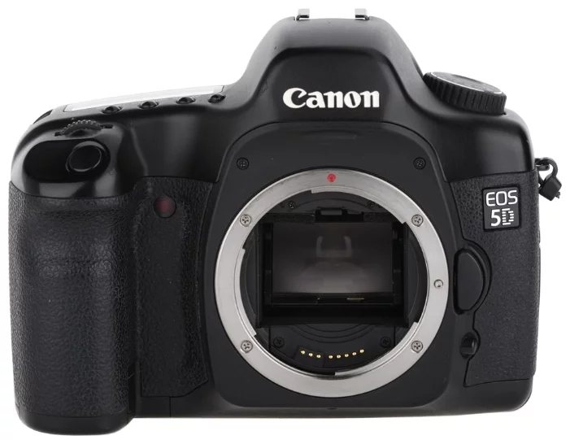
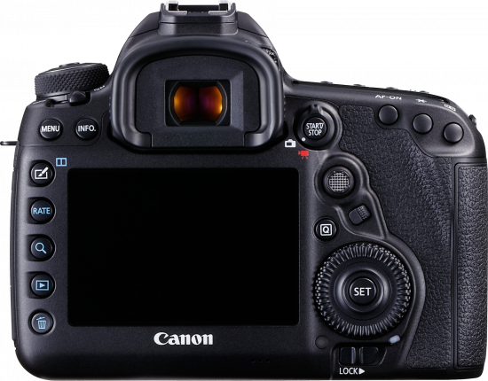

Фотоаппарат Canon EOS 5D
Описание товара
Профессиональная зеркальная фотокамера


Характеристики товара
- Корпус: Материал магниевый сплав
- Светочувствительный элемент: Матрица КМОП (CMOS)
- Сенсор: 35,8 x 23,9 мм
- Количество пикселей: 13.3 млн.
- Количество эффективных пикселей: 12.8 млн.
- Объектив
Тип объектива: сменный
- Совместимые объективы: EF (кроме объективов EF-S)
- Видоискатель / Экран
- Тип видоискателя: пентапризма
- Поле кадра видоискателя: 96 %
- Экран: TFT
- Размер диагонали экрана: 2.5 дюйма
- Разрешение экрана: 230000 пикселей
- Количество уровней яркости: 5
- Фокусировка
Система автофокусировки: TTL-автофокус
- Затвор
Диапазон выдержек (максимальное значение): 30 сек
- Диапазон выдержек (минимальное значение): 1/8000 сек
- Выдержка х-синхронизации: 1/200
- Вспышка
Встроенная вспышка: есть
- Внешняя вспышка: есть разъем
- Дополнительная информация: E-TTL II со вспышками Speedlite серии EX, возможность беспроводного подключения нескольких вспышек
- Съемка / Воспроизведение
Максимальное разрешение: 4368 x 2912
- Разрешение: 3168 x 2112, 2496 x 1664
- Непрерывная съемка (частота): 3 кадр/сек
- Непрерывная съемка (серия кадров): 60
- Габариты и вес
Ширина: 152 мм
- Высота: 113 мм | Глубина: 75 мм | Вес: 810 г
Подробное описание товара
12,8-мегапиксельная фотокамера Canon EOS 5D - лёгкая (с корпусом из магниевого сплава) зеркальная фотокамера с полнокадровым CMOS-датчиком. При весе всего 810 граммов она оснащена CMOS-датчиком второго поколения размером 35,8 x 23,9 мм, снимает со скоростью 3 кадра в секунду и 60 кадров с высоким разрешением в формате JPEG в серии в режиме непрерывной съёмки. Время включения камеры составляет всего 0,2 секунды.
Сопутствующие товары:
Фильтр Sony VF-67MPAM